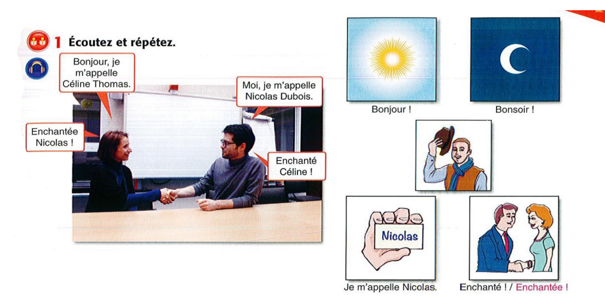
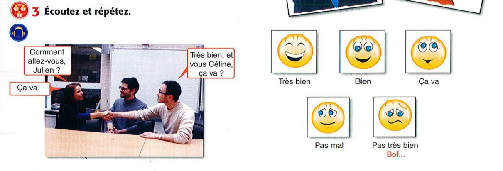
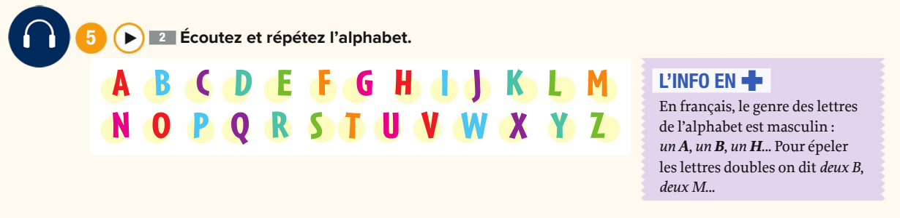
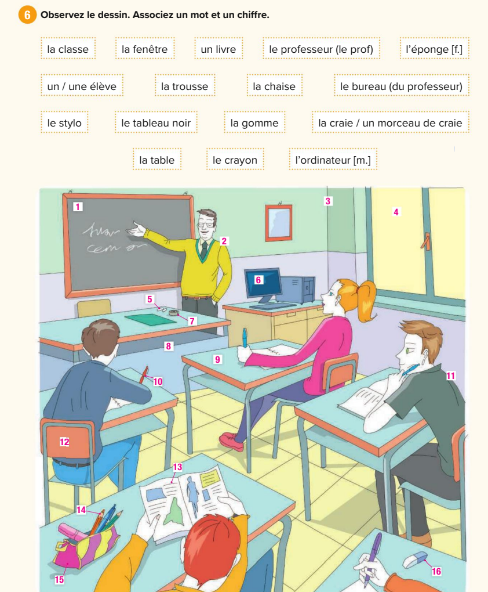
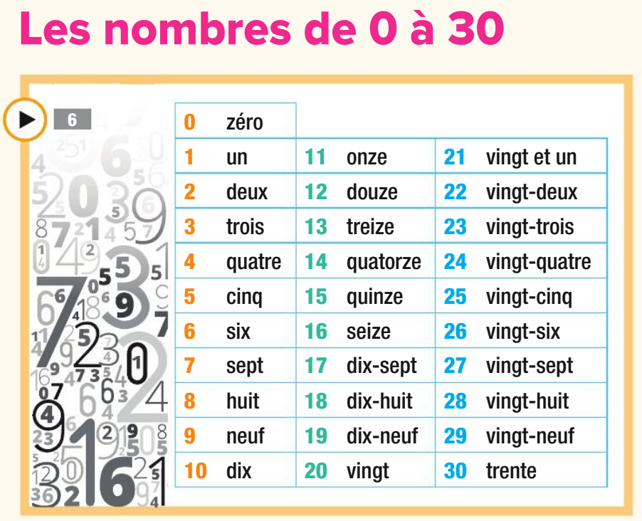
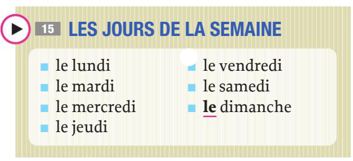
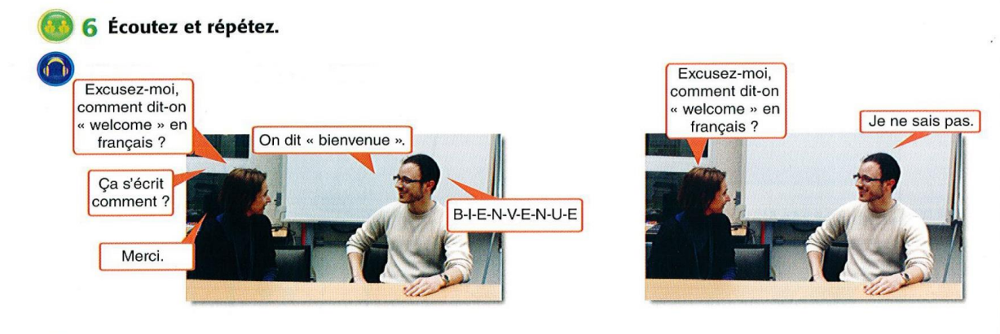

Module 1: Les Fondations (The Foundations)
The essential building blocks for your very first conversation in French.
Greetings & Politeness
Bonjour! - Hello / Good day. (بونچوور)
Bonsoir! - Good evening. (بونسوار)
Merci (beaucoup). - Thank you (very much). (ميرسي بوكو)
S'il vous plaît. - Please. (سيل ڤو پليه)
Excusez-moi. - Excuse me. (إكسكوزيه موا)
Subject Pronouns (Les Pronoms Sujets)
These are the people and things that perform actions in a sentence.
- Je (I) - (چوه)
- Tu (You - informal, for one friend) - (تو)
- Il / Elle (He / She) - (إيل / إل)
- Nous (We) - (نو)
- Vous (You - formal, or for a group) - (ڤو)
- Ils / Elles (They - Ils for all-male or mixed group, Elles for all-female) - (إيل / إل)
The Verb 'Être' (To Be)
This is arguably the most important verb in French. Memorize it!
- Je suis (I am) - Je suis égyptien.
- Tu es (You are) - Tu es un étudiant.
- Il/Elle est (He/She is) - Elle est enchantée.
- Nous sommes (We are) - Nous sommes ici.
- Vous êtes (You are) - Vous êtes professeur.
- Ils/Elles sont (They are) - Ils sont français.
The Verb 'Avoir' (To Have)
The second pillar of French grammar. Essential for expressing possession.
- J'ai (I have) - J'ai un crayon.
- Tu as (You have) - Tu as un livre.
- Il/Elle a (He/She has) - Il a une chaise.
- Nous avons (We have) - Nous avons une question.
- Vous avez (You have) - Vous avez un stylo.
- Ils/Elles ont (They have) - Elles ont des amis.
Exercise: Être ou Avoir?
Complete the sentences with the correct form of the verb. (Answers below)
- Je ___ David.
- Nous ____ un crayon.
- Elle ___ une chaise.
- Vous ___ fatigué (tired).
- Tu ___ un ami.
Answers: 1. suis, 2. avons, 3. a, 4. êtes, 5. as

Introductions & "How Are You?"
Je m'appelle... - My name is... (چوه ماپيل)
Enchanté(e)! - Delighted to meet you! (أونشونتييه)
Comment allez-vous? - How are you? (Formal, uses 'vous')
Ça va? - How's it going? (Informal, a shortened way of asking)
الردود (Replies): Très bien (Very well), Pas mal (Not bad), Bof... (Meh...).
Dialogue: A First Meeting
See how these phrases work together in a real conversation.
Ana: Bonjour! Je m'appelle Ana. Comment allez-vous?
Marc: Bonjour Ana! Je vais très bien, merci. Je m'appelle Marc. Enchanté!
Ana: Enchantée! Vous êtes français, Marc?
Marc: Non, je suis canadien. Et vous?
Ana: J'ai une mère française, mais je suis brésilienne.
Module 2: The Sound of French
The rules of pronunciation that will unlock the entire language.
L'Alphabet Français (The French Alphabet)
- A [a]
- B [be]
- C [se]
- D [de]
- E [ə]
- F [ɛf]
- G [ʒe]
- H [aʃ]
- I [i]
- J [ʒi]
- K [ka]
- L [ɛl]
- M [ɛm]
- N [ɛn]
- O [o]
- P [pe]
- Q [ky]
- R [ɛʀ]
- S [ɛs]
- T [te]
- U [y]
- V [ve]
- W [dubləve]
- X [iks]
- Y [igʀɛk]
- Z [zɛd]
Core Pronunciation Rules
حرف C: ينطق 'ك' قبل a/o/u (café), وينطق 'س' قبل e/i (cinéma). The ç (cedilla) is always an 's' sound (français).
حرف G: ينطق 'ج' مصرية قبل a/o/u (garçon), وينطق 'چ' معطشة قبل e/i (girafe).
العلامات (Accents): é (short 'ay'), è (long 'eh'), ê (longer vowel), ë (separate vowels).
مجموعات الحروف: `eau`/`au` = 'o' | `ou` = 'oo' | `oi` = 'wa' | `ch` = 'sh' | Nasal sounds `in`/`ain`/`un` = 'uhn', `on` = 'ohn', `an`/`en` = 'ahn'.
Module 3: The World Around You
Learning about objects and the golden rule of French: Gender and Plurals.
Gender & Articles (Singular)
In French, every noun has a gender, even objects! You must learn the gender with the word.
أدوات التعريف (The):
• le (le garçon) for masculine.
• la (la chaise) for feminine.
أدوات النكرة (A/An):
• un (un garçon) for masculine.
• une (une chaise) for feminine.
The Plural (Les & Des)
Once you know the singular, the plural is simple!
- The indefinite `un/une` (a/an) becomes des (some).
- The definite `le/la` (the) becomes les (the).
- To make most nouns plural, add a silent '-s' to the end.
Examples:
un crayon (a pencil) → des crayons (some pencils)
la chaise (the chair) → les chaises (the chairs)
Classroom Vocabulary (Singular & Plural)
- un crayon / des crayons
- un livre / des livres (book)
- une chaise / des chaises
- une table / des tables
- un élève / des élèves (student)
- un professeur / des professeurs
- une fenêtre / des fenêtres
- une porte / des portes (door)
Exercise: Singular to Plural
Transform these singular phrases into the plural form.
- un livre → ____________
- la porte → ____________
- une table → ____________
Answers: 1. des livres, 2. les portes, 3. des tables
Module 4: Everyday Essentials
Let's learn to count, read the calendar, and schedule our next meeting.
Les Nombres 0-100 (Numbers)
- 0-10: zéro, un, deux, trois, quatre, cinq, six, sept, huit, neuf, dix
- 11-16: onze, douze, treize, quatorze, quinze, seize
- 17-19: dix-sept, dix-huit, dix-neuf
- 20: vingt
- 21: vingt et un
- 30: trente
- 40: quarante
- 50: cinquante
- 60: soixante
- 70: soixante-dix (60+10)
- 80: quatre-vingts (4x20)
- 90: quatre-vingt-dix (4x20+10)
- 100: cent
The Calendar (Days & Months)
أيام الأسبوع: le lundi, le mardi, le mercredi, le jeudi, le vendredi, le samedi, le dimanche.
شهور السنة: janvier, février, mars, avril, mai, juin, juillet, août, septembre, octobre, novembre, décembre.
Module 5: La Boîte à Outils (The Survival Kit)
Your essential phrases to ask questions and navigate any conversation.
Asking for Help
Excusez-moi, comment dit-on «...» en français?
"Excuse me, how do you say '...' in French?"
Ça s'écrit comment?
"How is that written?"
Vous pouvez répéter, s'il vous plaît?
"Could you repeat that, please?"
Je ne sais pas.
"I don't know."
Je ne comprends pas.
"I don't understand."